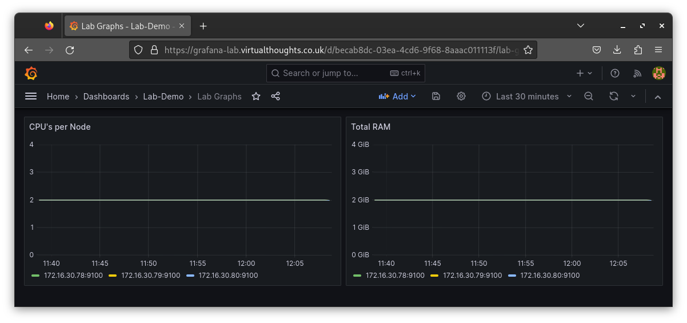

Recording Rules
Recording rules enable us to precompute frequently used expressions and save their result as a new time series.
CPU's per node:
apiVersion: monitoring.coreos.com/v1
kind: PrometheusRule
metadata:
name: node-cpu-count-recording-rule
namespace: prom-stack
spec:
groups:
- name: node-cpu-count-group
rules:
- record: lab_node:total_cpu_count
expr: count without(cpu, mode) (node_cpu_seconds_total{mode="idle", cluster="workload-cluster"})RAM amount in GB Per Node
apiVersion: monitoring.coreos.com/v1
kind: PrometheusRule
metadata:
name: node-total-mem-gb
namespace: prom-stack
spec:
groups:
- name: node-total-mem-gb
rules:
- record: lab_node:total_memory_gb
expr: (node_memory_MemTotal_bytes{cluster="workload-cluster"} / 1024^3)RAM amount in GB per CPU
apiVersion: monitoring.coreos.com/v1
kind: PrometheusRule
metadata:
name: node-mem-per-cpu
namespace: prom-stack
spec:
groups:
- name: node-mem-per-cpu
rules:
- record: lab_node:mem_per_cpu_bytes
expr: node_memory_Percpu_bytes{cluster="workload-cluster"}Visualising with Grafana
Example of basic graphs leveraging the above recording rules:
